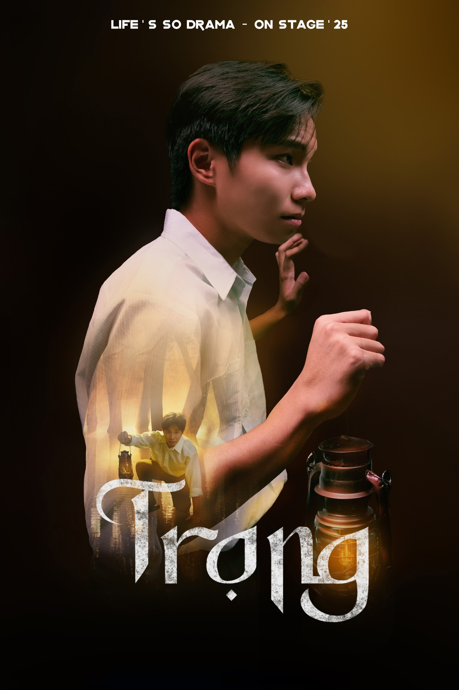

Nhân vật Trọng
- Nam, 28 tuổi, từng là điều dưỡng, là anh trai ruột của Quỳnh, là con của 2 vợ chồng trước đây từng làm giáo viên ở cô nhi viện 18 năm trước (bố cậu tên là Thanh, mẹ cậu tên là Mai)
- Ngày xưa, trong 1 đêm ở cô nhi viện, anh đã bị bố đưa đi trốn ngay trong đêm mà không rõ lý do, không rõ rằng Quỳnh và mẹ mình đang ở đâu.
- Suốt 18 năm sống cùng bố, anh liên tục có những giấc mơ rất kì lạ về việc anh thấy có những người không rõ mặt mũi bắt đi những đứa trẻ, và ác mộng về việc Quỳnh liên tục gọi anh quay lại. Khi hỏi bố những chuyện như thế thì bố chỉ lặng đi, bảo rằng bố và mẹ đã ly hôn khi ở cô nhi viện, và không trả lời thêm gì anh. Đến 1 hôm thì anh đã thấy bố mình tự vẫn ở trong phòng làm việc.
- Do có quá khứ như thế nên Trọng có xu hướng ít nói, thu mình lại với mọi người xung quanh, để ý tiểu tiết để góp phần tìm ra sự thật mà anh theo đuổi.
- Lúc đầu khi đến cô nhi viện anh chỉ chú tâm vào công việc và mục đích cá nhân của mình là tìm em gái Quỳnh.
- Sau khi tiếp xúc với Hoa và cô nhi viện, anh đã dần trở nên yêu mến nơi này hơn và dần đã mở rộng lòng mình ra hơn, bắt đầu đi tìm hiểu nhiều hơn về những thứ ở trong ngôi làng này.
- Trang phục: Màu xanh dương nhạt, đậm dần về cuối vở kịch